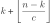
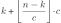

Introduction
Suppose that we need to partition a set of n items into k labeled subsets. What data structure should we use to represent partitions? Vast variety of real-world problems depend on such a data structure. Let me list a number of assorted examples.
UI layout. Given n UI elements of varying height, we want to distribute them into k columns such that the height of the tallest column is minimized.
Assuming that n and k are not very big, this can be easily achieved by bruteforce enumeration of all possible kn layouts and selecting the best one. During enumeration process we need to maintain the data structure that stores current layout. This data structure must support the following operations: 1) assigning given UI element into given column; 2) checking whether given UI element is assigned to a given column; 3) listing all elements in a column (to evaluate current layout). Due to simplicity of the bruteforce enumeration its performance will primarily depend on the efficiency of the listed operations.
Data shard balancing. Exactly the same problem arises in the area of distributed databases and filesystems. Given a set of n data shards — which can be highly uneven in size — we would like to distribute them among k servers such that disk usage of each server is approximately the same. This would correspond to the shortest possible time it would take to execute sequential scan query over all the data in parallel. Full enumeration of all possible shard-to-server mappings is out of question here due to typically large n and k. Instead, this problem can be solved using local search methods, which requires again an efficient data structure to store shard-to-server mappings.
Bin-packing. Any enumerative algorithm solving any of infinitely many versions of bin-packing problem also depends on such a data structure. In its simplest form the problem requires to distribute items of sizes s1,s2,..,sn between bins of capacity C each using as few bins as possible. Given NP-hardness of the problem, there is no universal way to solve it. Again, local search algorithms are the cornerstone of solving such problems in practice, when running time is limited. Normally, first preliminary step would be to run simple heuristic (e.g. fill bins one by one) to obtain an initial, although suboptimal solution. Number of bins k used by the initial solution is an upper bound on the optimal number of bins. All remaining time would be spent on trying to find a sequence of small changes that progressively reduces number of bins. Ability to store effectively item-to-bin assignment is crucial to achieve good performance.
What else? Clustering algorithms aim to find a partition of objects satisfying specific properties. Also a related problem is the design of cardinality-limited key/value caches. Typically such caches are implemented using hash tables, where stored values are additionally organized into doubly linked list in order of access time to evict the oldest entries. Such type of cache can be treated as partition of values into fixed number of buckets, making many of the ideas described below applicable.
All listed problems and many more rely on an efficient way of representing partitions. This justifies spending some time on designing such a data structure that will be efficient in terms of wall-time performance. Since set of items and number of subsets are known in advance, we can map them to integers. Therefore without loss of generality let item ∈ {0 .. n-1}, subset ∈ {0 .. k-1} ∪ {-1}, where the latter is a special value indicating that the item is assigned to nowhere. Whether we want to support -1 or not is purely a design choice. On the one hand, we can always emulate "nowhere" by adding artificial subset. On the other hand, some problems may keep large number of items not assigned to any of the subsets at any given time. This suggests that it is better to support "nowhere" explicitly for performance reasons, so let’s stick with the latter option. Below is the list of operations that data structure under consideration must support:
/* Construct new partition object for given number of items and subsets.
* All items are initially assigned to nowhere. */
Init(num_items:int, num_subsets:int);
/* (Re)assign item to a given subset, possibly to "nowhere" (-1). */
Assign(item:int, subset:int);
/* Query where given item belongs to. */
SubsetOf(item:int) -> subset:int;
/* Return a container-like view of the given subset that allows
* to iterate over items assigned to it (in arbitrary order). */
ViewOf(subset:int) -> Iterable<item:int>;Set-based implementations
Obvious solution is to use one SetType instance per each subset, where SetType
is any set-conforming implementation, such as std::set or std::unordered_set.
More specifically, we need two arrays.
One — item_data — stores for each item the subset it is currently assigned to or (-1).
Another — subset_data — stores the items of each subset inside a SetType instances.
1
2
3
4
5
6
7
8
9
10
11
12
13
14
struct ItemData{ int subset; } item_data[num_items];
struct SubsetData{ SetType items; } subset_data[num_subsets];
void Assign(int item, int subset) {
int curr_subset = item_data[item].subset;
if (curr_subset != subset) {
if (curr_subset != -1) {
subset_data[curr_subset].items.erase(item);
}
if (subset != -1) {
subset_data[subset].items.insert(item);
}
item_data[item].subset = subset;
}
}
What performance should we expect for Assign() operation?
It depends on SetType implementation, of which we have two in STL.
std::set is based on red-black trees and works in O(log n) time — far from perfect.
std::unordered_set is better in terms of asymptotics: implemented using hash tables,
it performs insertion and deletion in only O(1).
However, there is significant per-item overhead associated with unordered_set (as of GNU stdc++-11):
-
Inserting an item causes walk over the nodes of the bucket to check whether the item is already present.
-
Bucket index is computed using IDIV instruction — its latency is up to 90 cycles in Intel CPUs.
-
After modification it is checked whether number of buckets needs to be changed, and if the answer is yes then costly O(n) rehashing is performed.
Another small source of inefficiency comes from memory allocation.
No matter whether we choose set or unordered_set, they both are node-based and perform
dynamic memory allocation and deallocation on each insertion and deletion respectively.
Finally, all the issues have double impact since to move an item from one subset to another one
requires interaction with two SetType instances.
Some of the issues can be alleviated.
SetType implementation can be replaced with corresponding multiset:
this should make insertion a bit faster at the cost of a bit slower deletion.
Number of dynamic memory allocations can be reduced by reusing nodes with C++17
extract().
Rehashing in unordered_set can be made less frequent by invoking reserve(count) on newly
constructed instance with count equal to the expected max number of items per subset,
but this comes at the cost of higher memory consumption.
Anyway, assign performance remains poor even with these tweaks.
Iterating over subset items is also poor for both set and unordered_set due to necessity to walk
over the nodes of the linked lists, which makes memory prefetching and caching ineffective.
Since we are not limited with standard library implementations of hash set, let’s try to plug one of the many third-party alternatives, which are predominantly open-addressed. Open addressing makes iteration blazingly fast since it effectively degenerates into walking over dense array of the item slots and checking on the way which ones are actually occupied. Such data access pattern is perfect for both memory prefetching and caching. Modification operations in open-addressed hash tables are also typically faster thanks to improved caching (no pointers ⇒ lower memory footprint) and due to absence of node allocation/deallocation. Exact running time will of course depend on the particular data structure used. As an example, in the final result table I included measurements for tsl::hopscotch_set. To make bucket location faster, it uses power-of-two growth policy, which makes costly division unnecessary.
Linked-list implementations
In this section we will investigate two specialized data structures based on linked lists.
Key observation is that while a single subset can contain anywhere from 0 to n items,
cumulative number of items in all subsets together also does not exceed n.
This suggests that O(n+k) memory we allocate for item_data and subset_data arrays
combined is all that we will ever need.
But to make use of this idea, we have to extend ItemData structure with two more fields:
these will be the item indices referencing the previous and the next items in the same subset respectively.
Overall this means that item_data now has dual role.
As before, it acts as a one-way mapping between an item and the subset it is assigned to.
Its second role is to act as an intertwining of k disjoint doubly linked lists, one for each subset.
Item indices to the backs of these linked lists are stored in subset_data.
To insert item i to subset s, we first set item_data[i].subset=s and
next we add item_data[i] to the back of the subset’s linked list by juggling prev/next indices.
To remove an item we do the opposite: we set item_data[i].subset=-1 and
we also delete item_data[i] from the linked list of its current subset by splicing two sublists.
Iteration is just walking over the items of the linked list starting with subset_data[s].back_item.
1
2
3
4
5
6
7
8
9
10
11
12
13
14
15
16
17
18
19
void Assign(int item, int subset) {
if (item_data[item].subset != subset) {
if (item_data[item].subset != -1) {
/* Remove item from its current subset:
* 1) link together item_data[item_data[item].prev_item]
* with item_data[item_data[item].next_item]
* 2) set item_data[item].subset = -1 */
...
}
if (subset != -1) {
/* Add item to the given subset:
* 1) link together item_data[item]
* with item_data[subset_data[subset].back_item]
* 2) set subset_data[subset].back_item = item
* 3) set item_data[item].subset = subset */
...
}
}
}
We will call this data structure ItemTwine to indicate that it consists of multiple entangled linked lists holding separate items. Now if you look into comparison table in the end of the article, you can see that our newly designed data structure excels in assignment. This is expected since it is implemented as a simple, constant-time operation devoid of dynamic memory allocation, division and loops. Iteration, on the other hand, is no better than in set-based data structures, again because it requires walking along prefetcher-unfriendly linked lists.
Our next goal is to speed up iteration without sacrificing performance of assigning too much.
It is clear that to achieve this goal we have to pack items of the same subset close together.
This leads us to the following implementation based on grouping items into chunks.
The idea is to use linked lists to stitch together not the separate items,
but fixed-sized chunks of at most c items each.
This leads us to the next data structure — ChunkTwine.
Memory layout becomes more complex.
We need to allocate one pointer (free) in addition to three arrays:
subset_data, item_data, and chunk_pool.
Similarly to the previous data structure, subset_data[s] stores pointer to the back chunk of its linked list.
Chunks themselves are preallocated into chunk_pool array.
Each chunk contains two pointers to link it with adjacent chunks in the linked list,
an array of items of capacity c, and a value that indicates the actual number (≤c) of stored items.
Third array — item_data — in addition to information to which subset item belongs to,
will also carry 2d coordinates of its location: chunk pointer and the position inside the chunk’s array.
Initially we link together all chunks into the pool of free chunks, the back of which we
reference by the free pointer.
When we want to add an item i into subset s, we append it to the items array of the back chunk
of the designated subset and increase num_items.
If the back chunk is already full (or absent altogether, which happens when subset is empty),
we first pop a chunk from the free pool and attach it to the linked list of s.
Such logic ensures that in each subset only the back chunk can be non-full, and even in this chunk
no holes can occur.
In any case, after we have added item to the chunk, we set ItemData[i] to point to its location,
which is a tuple consisting of a pointer to the chunk and a position inside this chunk’s array.
To delete an item, we first get its location stored in item_data[i].
We cannot just write (-1) to the slot pointed by this location because it would create a hole.
Instead we delete an item by moving another item — the last one in the back chunk of the subset — into its place.
After this is done, we have to update coordinates of two items: the item that we have deleted
(set its coordinates to NULL/-1) and the item we have moved.
In corner case when the moved item was the only one in the back chunk, we migrate this chunk from the
subset’s linked list into the pool of free chunks.
Example: if we unassign item 8 in the pictured example, then the left blue chunk will migrate into the grays,
while the right blue chunk will contain items [7,4,5,1] and become new "back".
Iteration is a simple operation: walk over all chunks of the target subset starting with
subset_data[s].back, and for each chunk return all items with indices from 0 to num_items (exclusive).
1
2
3
4
5
6
7
8
9
10
11
12
13
14
15
16
17
18
19
20
21
22
23
24
void Assign(int item, int subset) {
if (item_data[item].subset == subset) {
return;
}
if (item_data[item].subset != -1) {
/* Remove item from its current subset:
* 1. Remove and remember the last item from the back chunk of the subset
* 2. If back chunk becomes empty, migrate it into free chunk pool
* 3. Unless item == last_item, put last_item into position occupied previously
* by the item and update item_data[last_item] fields accordingly
* 4. Reset item_data[item] fields to defaults */
...
}
if (subset != -1) {
/* Add item to the given subset:
* 1. Get back chunk of the subset
* 2. If it is NULL or full, add new chunk from free chunk pool
* 3. Add item into back chunk and increase its num_items
* 4. Set item_data[item] fields accordingly */
...
}
}
Description of the assign operation makes it clear that our newly designed data structure maintains the invariant that each chunk always belongs to the one of k+1 disjoint linked lists: either to the linked list of one of the subsets, or to the linked list of the pool of free chunks. How many chunks do we need to allocate in total? Since we have enforced the rule that for each subset at most one chunk can be non-full, then in the worst case we will need  chunks. Note that it is sufficient to perform rounding down. This worst-case bound comes from the following construction. First  items form a partition where each subset consists of one chunk with only one item in it plus some number (≥0) of full chunks. Remaining items (there are strictly < c of them) no matter how we distribute them among subsets, will always have to fall into the chunks with initially one item in them. Therefore these items do not require additional chunks and the stated bound is exact.
We have some implementation freedom left.
List of free chunks can be implemented as FIFO or LIFO (stack).
The latter is wiser since it reduces chances of cache misses.
For example, when it is expected that at any given moment number of assigned items is significantly
smaller than n, then the majority of chunks in the pool will remain cache-cold.
Another consideration is the value of c, on which the number of allocated chunks depends.
Larger c values will improve iteration performance at the cost of higher memory overhead.
Experiments show that for "idling" iterating (e.g. counting items) reasonable c values lie in range [32, 128].
c≈128 is the saturation point beyond which performance does not improve.
Doing useful per-item work while iterating makes selection of c even less important.
Perfectionists would also prefer such c values which make sizeof(Chunk) to be multiple
of cache line size and allocate chunk pool aligned accordingly.
Third consideration is whether to use pointers or indices to reference chunks.
Both options are viable.
Assuming that c is sufficiently big, there should be no difference in performance.
For small values (imagine extreme case of c=1) i32 indices should be prefered
since it will reduce memory consumption.
The benefit is not memory conservation per se, but the improved cache locality due
to smaller memory footprint.
Final remark should be made about prefetching.
Further small boost in performance can be achieved if we place
prefetch calls
into iteration logic:
as soon as we have some chunk at hand, initiate prefetch of the next chunk (chunk->next).
This makes linked lists less unfriendly with respect to memory subsystem, but the gains are only marginal in reality.
/***** ChunkTwine ******/
class Iterator {
public:
Iterator(Chunk* chunk, int chpos) : chunk_(chunk), chpos_(chpos) {
if (chunk_) { __builtin_prefetch(chunk_->next, 0/*read*/, 1); }
}
Iterator& operator++() {
chpos_++;
if (chpos_ >= chunk_->num_count) {
chunk_ = chunk_->next;
chpos_ = 0;
if (chunk_) { __builtin_prefetch(chunk_->next, 0/*read*/, 1); }
}
return *this;
}
/* ... */
private:
Chunk* chunk_;
int chpos_;
};Data structure we have constructed is quite universal. It may not be the fastest for some specific usage scenario, but it also doesn’t have any fatal shortcomings and therefore always demonstrates acceptable performance. Let’s check why this is so. Iteration is fast due to items being packed close together [✓]; assign operation is still O(1) [✓]; memory footprint is close to minimum [✓]. Its additional benefit is that memory can be allocated statically, e.g. in a file-mapped address space.
Circular list implementation
This implementation — called Carousel — uses circular buffer (ring) instead of linked lists.
The idea is to store items of each subset in a contiguous region inside the ring.
Again, because total number of stored items doesn’t exceed n, it is sufficient for the ring
to be of exactly this capacity.
In practice we will allocate more memory to improve Assign() performance in amortized sense.
We associate with each subset two values, begin and size, which together define the contiguous
region of items inside the ring.
Such layout benefits iteration.
To move to the next item we increment position pointing into the ring and, in rare case when
it has reached the end of the memory that backs the ring, we rewind it to zero.
Overall this means that for all subsets except maybe but one items are physically stored in
a single memory chunk, while the items of the sole "unlucky" subset may span two chunks:
[s.begin .. ring.cap) ∪ [0, s.size - (ring.cap - s.begin)),
where ring.cap is the capacity of the ring.
Initially we distribute beginnings of the subsets approximately evenly along the ring, i.e.
subset_data[s].begin = ring.cap/num_items * s; and set the sizes of all subsets to 0.
Items are always appended to the end of the subset’s region.
If the target slot is free (-1), then we write item to it, increase subset size by one,
set item_data[i].pos to point to the target slot, and we are done.
Otherwise, if the value in the slot ≠-1 this means that we have bumped into the region of some
other subset.
In this case we also proceed as planned, but additionally relocate the item previously written
to the target slot to the end of the region it belongs to.
This latter operation may in turn bump in into the region of the third subset,
which would require another relocation, and so on.
Relocations make assignment O(k) since in the worst case we will have to do
one relocation per each subset.
But on average the number of reallocations is few.
Among other things, this number depends on how many free slots we have in the ring — something we have control of.
That’s why in practice we create ring with larger capacity than we have items, let’s say by a factor of two.
Another thing we need to be careful about when inserting items is when we insert item into an empty subset.
Due to the previous relocations of the items it is possible that s.begin points
into the middle of the region of some other subset.
In this case relocation of the item to the end of the region will not help — it will violate the continuity invariant.
However, since subset is empty, we can just rotate its beginning until we encounter free slot and insert item there.
Note that this can change the order of the subsets around the ring.
Alternatively, we could demand that subsets never be empty by placing sentinel values.
Removing items is done using already described technique:
by filling the place of the removed item with the last item in the subset.
Overall Assign() logic is quite complex, but in practice its performance is comparable
to that of LL-based data structures.
It should be mentioned that to achieve good performance implementations must not use modulo operator.
Recall that during both assignment and iteration we move along the ring,
which requires incrementing position and rewinding it to zero if it hits ring capacity.
This must be done strictly by using if/else and not the modulo operator because the latter is so slow.
Comparison
First two benchmarks are synthetic.
They measure performance of assigning and iterating independently.
A partition is created with n=1,000,000 and k=1,000.
Assignment benchmark executes a sequence of Assign() operations by passing arguments
from a large prepared vector of random item/subset pairs.
Iterating benchmark scans subsets drawn from prepared vector and counts items
on the way to ensure that compiler doesn’t optimize out iterating altogether.
To compare described data structures under more realistic workloads, I also coded
the following "algorithmic" benchmarks:
-
layout — follows the example from the introduction. The goal is to find k=3-column layout of n=16 widgets with heights drawn from ~U(1, 1000), such that height of the tallest column is minimized. The algorithm is brute force enumeration of all possible 316 layouts.
-
kmeans — clusterize n=1,000,000 1d points into k=5 clusters using 500 iterations of classical K-means algorithm.
-
balancer — follows the example on shard balancing from the introduction. Starting from a random mapping of 10,000 shards to 100 servers, in each iteration algorithm selects randomly two servers and tries to move some shard from the higher loaded server to the less loaded server in order to equalize disk usage of both servers as much as possible.
Listed algorithms were implemented in the simplest possible way. Benchmarks were compiled with GCC 10.2.1 and executed on Intel 7700HQ CPU (2.80GHz, 6MiB L3) with turbo boost disabled. Performance of synthetic benchmarks is reported in processed items per second (the higher — the better), while for algorithmic benchmarks the reported values are end-to-end time except data initialization (the lower — the better).
| assign [i/s] | iterate [i/s] | layout [s] | kmeans [s] | balancer [s] | |
|---|---|---|---|---|---|
PolyRbSet |
0.7M |
10.8M |
7.816 |
30.348 |
15.150 |
PolyHashSet |
1.7M |
13.4M |
5.398 |
39.066 |
7.830 |
PolyHopscotchSet |
6.8M |
86.6M |
11.380 |
9.377 |
3.593 |
ItemTwine |
46.1M |
22.2M |
1.029 |
22.438 |
0.869 |
ChunkTwine |
33.0M |
1666.7M |
1.412 |
9.819 |
0.989 |
Carousel |
36.1M |
2644.6M |
1.734 |
9.284 |
0.933 |
Behaviour of data structures under synthetic benchmarks was already discussed along the course of the article, but results for algorithmic benchmarks require further explanation. Results may appear surprising at first.
In layout benchmark, we see that PolyHopscotchSet performs the worst of all tested data structures.
A bit of time spent on profiling (set noinline attribute to target function → run callgrind
→ analyze results with kcachegrind → repeat) reveals that the bottleneck is the iteration.
Source code suggests that out-of-the box hopscotch_set is not optimized for small sets like ours.
Internally it creates 93 buckets: 32 buckets as the next power-of-two for max number of stored items
plus 62-1 buckets as the "neighborhood".
This means that even when there is only single item present in a set, iteration has to walk along all
93 buckets, making it very expensive operation for small-sized sets.
Performance supposedly can be improved by tuning template parameters, i.e. by reducing neighborhood size
and making growth policy more conservative, although I didn’t test it.
In kmeans benchmark number of items is much larger but performance is also dominated by iterating. Points aggressively migrate between clusters only during the first couple of iterations. After that, points are reassigned to the clusters to which they already currently belong. Such situation is explicitly checked in all implementations, resulting in no-op. As a consequence, we can observe that implementations using linked lists to store individual items (PolyRbSet, PolyHashSet, ItemTwine), perform poorly, while implementations with continuous item storage perform better by a factor of ≈3. Surprisingly, PolyHashSet is even worse than PolyRbSet despite the better asymptotics of the former.
Balancer benchmark is the only one where results appear similar to that of synthetic benchmarks. Likely it is because balancer algorithm has higher ratio of assigning compared to iteration: there is one item reassigning per each two subsets scanned.
In general, it is natural that iterating has more importance than assignment from performance perspective because in a typical algorithm, we have to iterate over many items before we can make some reasonable assignment. As such, data structures with continuous item storage should be preferred. But asymptotics should not be entirely forgotten. For example, although carousel performs well in all listed benchmarks, it doesn’t perform assignment in constant-time. It is possible to construct pathological sequence of operations that will ruin its performance.